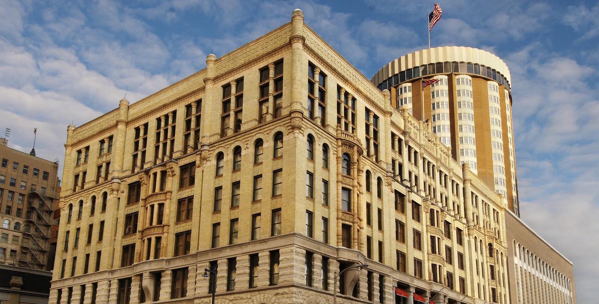
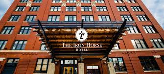

With over a hundred hotels complexes in the Greater Milwaukee area there is always a place for you to stay no matter what time of year. Although downtown Milwaukee is the best place to stay with many historic sights right outside your window. The Pfister hotel is a historic landmark in Milwaukee after being built 129 years ago it is a great place to stay the night. And the Iron Horse hotel offers a differen type of experience with events happening throughout the week they encourage you to join.
Top 10 Hotels
The Pfister Hotel
Kimpton Journeyman Hotel
Saint Kate – The Arts Hotel
The Iron Horse Hotel
The Westin Milwaukee
DoubleTree
The Brewhouse Inn & Suites
Ambassador Hotel
Radisson Hotel Milwaukee West
Hyatt Regency Milwaukee

